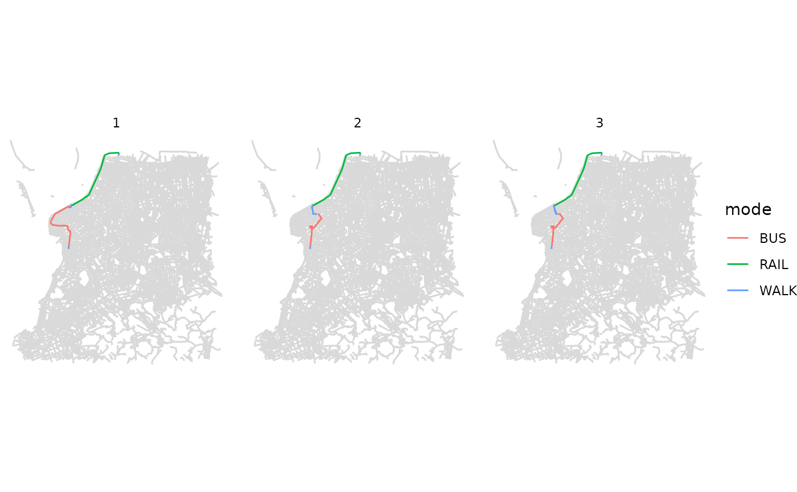

../vignettes/detailed_itineraries.Rmd
detailed_itineraries.RmdAbstract
This vignette shows how to do route planning using thedetailed_itineraries() function in r5r.
r5r has some extremely efficient functions to run multimodal routing and accessibility analysis. In general, though, these functions output only the essential information required by most transport planning applications and simulation models. Moreover, the algorithms behind these function return only the optimal route in terms of minimizing travel times and/or monetary costs. Sometimes, though, we would like to do more simple route planning analysis and extract more information for each route. Also, we might be interested in finding not only the fastest route but some other suboptimal route alternatives too.
This is where the detailed_itineraries() function comes
in. This function outputs for each origin destination pair a detailed
route plan with information per leg, meaning a route taken by a single
mode such as a walk to the bus stop. In R5’s documentation these legs
are referred to as ‘segments’, a word more usually used to describe
small sections on the transport network. Results contain information on
the mode, waiting times, travel times and distances for each leg (or
‘segment’ in R5 documentation) and the trip geometry. Moreover, the
detailed_itineraries() function can also return results for
multiple route alternatives. Let’s see how this function works using a
reproducible example.
obs. We only recommend using
detailed_itineraries() in case you are interested in
finding suboptimal alternative routes and/or need the geometry
information of the outputs. If you only want to have route information
detailed by trip segments, then we would strongly encourage you to use
the expanded_travel_time_matrix() function. More info
here.
setup_r5()
First, let’s load some libraries and build our multimodal transport
network. In this example we’ll be using the a sample data set for the
city of Porto Alegre (Brazil) included in r5r.
# increase Java memory
options(java.parameters = "-Xmx2G")
# load libraries
library(r5r)
library(sf)
library(ggplot2)
library(data.table)
# build a routable transport network with r5r
data_path <- system.file("extdata/poa", package = "r5r")
r5r_core <- setup_r5(data_path)
# routing inputs
mode <- c('walk', 'transit')
max_trip_duration <- 60 # minutes
# departure time
departure_datetime <- as.POSIXct("13-05-2019 14:00:00",
format = "%d-%m-%Y %H:%M:%S")
# load origin/destination points
poi <- fread(file.path(data_path, "poa_points_of_interest.csv"))In this example below, we want to know some alternative routes
between a single origin/destination pair. To get multiple route
alternatives, we need to set shortest_path = FALSE.
# set inputs
origins <- poi[10,]
destinations <- poi[12,]
mode <- c("WALK", "TRANSIT")
max_walk_time <- 60
departure_datetime <- as.POSIXct("13-05-2019 14:00:00",
format = "%d-%m-%Y %H:%M:%S")
# calculate detailed itineraries
det <- detailed_itineraries(r5r_core = r5r_core,
origins = origins,
destinations = destinations,
mode = mode,
departure_datetime = departure_datetime,
max_walk_time = max_walk_time,
suboptimal_minutes = 8,
shortest_path = FALSE)
head(det)
#> Simple feature collection with 6 features and 16 fields
#> Geometry type: LINESTRING
#> Dimension: XY
#> Bounding box: xmin: -51.24094 ymin: -30.05 xmax: -51.19762 ymax: -29.99729
#> Geodetic CRS: WGS 84
#> from_id from_lat from_lon to_id to_lat
#> 1 farrapos_station -29.99772 -51.19762 praia_de_belas_shopping_center -30.04995
#> 2 farrapos_station -29.99772 -51.19762 praia_de_belas_shopping_center -30.04995
#> 3 farrapos_station -29.99772 -51.19762 praia_de_belas_shopping_center -30.04995
#> 4 farrapos_station -29.99772 -51.19762 praia_de_belas_shopping_center -30.04995
#> 5 farrapos_station -29.99772 -51.19762 praia_de_belas_shopping_center -30.04995
#> 6 farrapos_station -29.99772 -51.19762 praia_de_belas_shopping_center -30.04995
#> to_lon option departure_time total_duration total_distance segment mode
#> 1 -51.22875 1 14:09:10 36.2 9460 1 WALK
#> 2 -51.22875 1 14:09:10 36.2 9460 2 RAIL
#> 3 -51.22875 1 14:09:10 36.2 9460 3 WALK
#> 4 -51.22875 1 14:09:10 36.2 9460 4 BUS
#> 5 -51.22875 1 14:09:10 36.2 9460 5 WALK
#> 6 -51.22875 2 14:09:10 43.9 8773 1 WALK
#> segment_duration wait distance route geometry
#> 1 4.6 0.0 174 LINESTRING (-51.1981 -29.99...
#> 2 6.6 1.3 4796 LINHA1 LINESTRING (-51.19763 -29.9...
#> 3 5.7 0.0 256 LINESTRING (-51.22827 -30.0...
#> 4 10.4 4.4 4083 188 LINESTRING (-51.22926 -30.0...
#> 5 3.2 0.0 151 LINESTRING (-51.22949 -30.0...
#> 6 4.6 0.0 174 LINESTRING (-51.1981 -29.99...The output is a data.frame sf object, so we can easily
visualize the results.
Static visualization with ggplot2
package: To provide a geographic context for the visualization of the
results in ggplot2, you can also use the
street_network_to_sf(( function to extract the OSM street
network used in the routing.
# extract OSM network
street_net <- street_network_to_sf(r5r_core)
# extract public transport network
transit_net <- r5r::transit_network_to_sf(r5r_core)
# plot
fig <- ggplot() +
geom_sf(data = street_net$edges, color='gray85') +
geom_sf(data = subset(det, option <4), aes(color=mode)) +
facet_wrap(.~option) +
theme_void()
fig
# SAVE image
ggsave(plot = fig, filename = 'inst/img/vig_detailed_ggplot.png',
height = 5, width = 15, units='cm', dpi=200)detailed_itineraries() will query routes
between the 1st origin to the 1st destination, then the 2nd origin to
the 2nd destination, and so on. If you would like to query routes
between all origins to all destinations you can simply set
all_to_all = TRUE.detailed_itineraries() will not return the
spatial geometry of results. To retrieve this information you can simply
set geometry = TRUE.Please note that the detailed_itineraries() functions
does not run on frequency-based GTFS feeds. A simple hack to overcome
this problem is to convert your GTFS data from frequencies to time
tables. This can be easily done using the gtfstools
package. Here is how:
library(gtfstools)
# location of your frequency-based GTFS
freq_gtfs_file <- system.file("extdata/spo/spo.zip", package = "r5r")
# read GTFS data
freq_gtfs <- gtfstools::read_gtfs(freq_gtfs_file)
# convert from frequencies to time tables
stop_times_gtfs <- gtfstools::frequencies_to_stop_times(freq_gtfs)
# save it as a new GTFS.zip file
gtfstools::write_gtfs(gtfs = stop_times_gtfs,
path = tempfile(pattern = 'stop_times_gtfs', fileext = '.zip'))… and now you can use r5r on this
stop_times_gtfs.zip.
r5r objects are still allocated to any amount of memory
previously set after they are done with their calculations. In order to
remove an existing r5r object and reallocate the memory it
had been using, we use the stop_r5 function followed by a
call to Java’s garbage collector, as follows:
If you have any suggestions or want to report an error, please visit the package GitHub page.